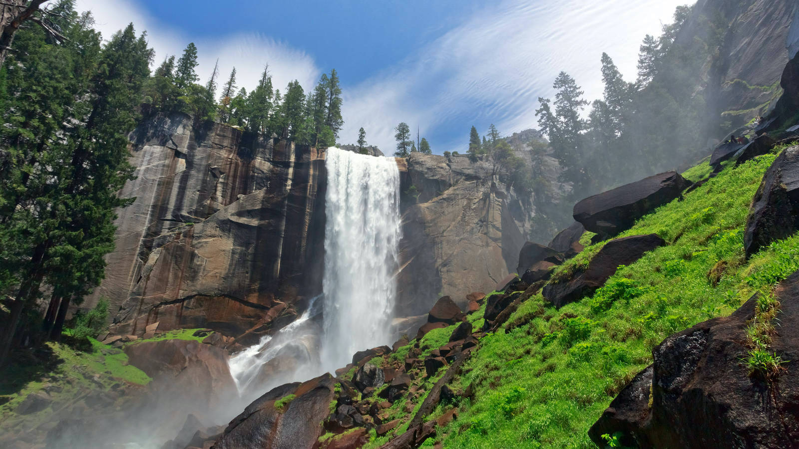

About the National Parks Recommender

Our small team of data science students decided that it would be worthwhile to build a tool that can help people get out and visit our beautiful National Parks in the U.S. We broke down this project into two phases. Our phase 1 approach was to incorpote a map of all the National Parks in the United States. We also wanted to give the user the oppurtunity to view how many campsites are available, and any associated information that the park may want to alert to the public. We also wanted to include a weather module that would give the user the ability to view historical and 7 day forecast weather to help determine the desired time to visit.
Our phase 2 approach built upon our current framework and included a machine learning aspect. We spent a little bit of time surveying the public about National Parks they had visited in the past, and how they rated them (1-5). We also asked some categorical preference questions about climate, landscape, activites and any other special requests/requirements. We then used a KNN machine learning approach to build a model that can be used to predict which National Park the user may be interested in visiting based on a few clicks on pictures that appeal to them. This is very similiar to the method Netflix would use to predict a movie for you to watch.